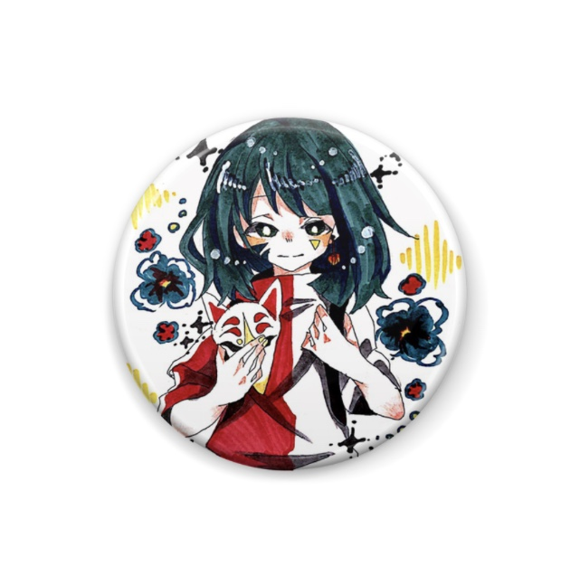

2018/11/15
こんにっちゃ！
珍しくお昼に記事を書いてるＡｍｙだよ
昨日キャスに来ていた人はわかるかもだけど
実は昨日、結構落ち込むことがあってね。
それは単純に自分の実力不足が原因の事だったんだけど
それだけにめちゃくちゃ悔しくて。
だからそれで、周りの人に相談したんよ
「これからどうすれば、もっと成長できる？」
「私には今、何が足りない？何を武器として使える？」
とか、色々な事を相談して、そこから次への対処を練ったりして。
私は不器用だし思考が未熟なのもわかってるから
その人たちには悪いけど、本当に色々頼らせてもらった
純粋に励ましてくれる人とか、的確なアドバイスをくれる人とか
本当にそのどれにも助けられて、ありがたかった！
まぁそれで色んな相談のこと考えながら、昼にふらっと散歩したのね。
私この一年ずーーっと忙しくて、昼に散歩とかすごい久々で
そんな久しぶりに昼の日差しの中歩いてたら
どんどん思考も整理がついてきてさ。
太陽ってすげぇぇ！！！て思った!(アホ)
こうゆうときに格言みたいのは一個も出てこないんだよね
アホだから！！
そいたらまぁ、元のアホ頭なりに通常運転に戻ってこれたから
とりあえずこれから、暇になったし次のことを頑張ろう、と！
・基礎力と能力の幅を増やす
・自分の特性の自覚と対処
・サイト運営ぜってぇ毎日やる！
どこのビジネス本だ！！！
って感じの内容だけど、まぁやりたい事だし
いっかーーーーーーー！！！！
はい！そんなわけで色々落ち込んだり
ぐちぐち考え込んだりしたけど
(サイトは特に)パワーアップして、力込めてやってくよ！
そのエネルギーの方向がまず商品開発の方に向いた！
…楽しい！！！
いやぁぁぁぁデザイン楽しいし色んなの作りたい！
とりあえずパーカーとか作ってみたいな！
近日中に作るかも！
とりあえず今日は長くなっちったし
ここらで！ばいばーーーい！！